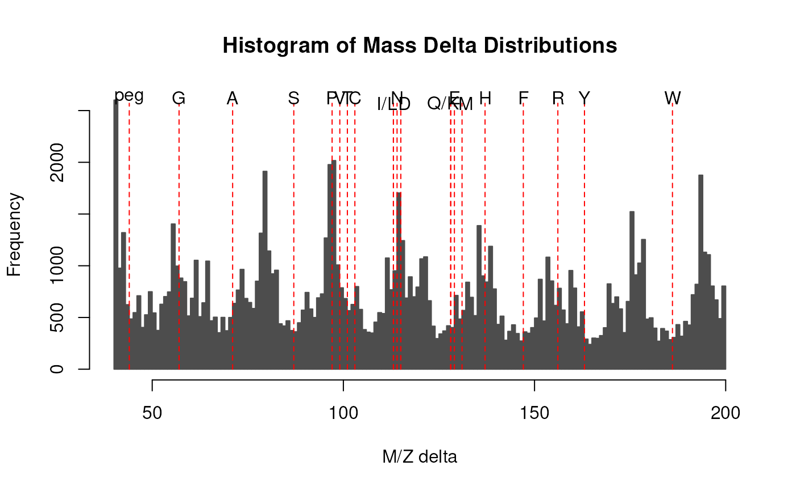

The M/Z delta plot illustrates the suitability of MS2 spectra for identification by plotting the M/Z differences of the most intense peaks. The resulting histogram should optimally show modes at amino acid residu masses. The plots have been described in Foster et al. 2011.
Only a certain percentage of most intense MS2 peaks are taken into
account to use the most significant signal. Default value is 20%
(see percentage argument). The difference between peaks is then
computed for all individual spectra and their distribution is
plotted as a histogram. Delta M/Z between 40 and 200 are plotted
by default, to encompass the residue masses of all amino acids and
several common contaminants, although this can be changes with the
mzRange argument.
In addition to the processing described above, isobaric reporter tag peaks and the precursor peak can also be removed from the MS2 spectrum, to avoid interence with the fragment peaks.
Note that figures in Foster et al. 2011 have been produced and optimised for centroided data. While running the function on profile mode is likely fine, it is recommended to use centroided data.
A ggplot2 based function called ggMzDeltaPlot() to visualise
the M/Z delta distributions is available at
https://gist.github.com/lgatto/c72b1ff5a4116118dbb34d9d2bc3470a.
An instance of class Spectra().
numeric(1) between 0 and 1 indicating the
percentage of the most intense peaks in each MS2 spectrum to
include in the calculation. Default is 0.2.
numeric(2) with the upper and lower M/Z to be used to
the MZ deltas. Default is c(40, 200).
An optional BiocParallelParam instance determining
the parallel back-end to be used during evaluation. Default is
to use BiocParallel::bpparam(). See ?BiocParallel::bpparam
for details.
A list of M/Z delta values, as returned by
computeMzDeltas().
logical(1) defining whether the amino acids
should be labelled on the histogram. Default is TRUE.
computeMzDeltas() returns a list of numeric
vectors. plotMzDelta() is used to visualise of M/Z delta
distributions.
Foster JM, Degroeve S, Gatto L, Visser M, Wang R, Griss J, et al. A posteriori quality control for the curation and reuse of public proteomics data. Proteomics. 2011;11: 2182-2194. http://dx.doi.org/10.1002/pmic.201000602
library(msdata)
f <- proteomics(pattern = "TMT.+20141210.mzML.gz", full.names = TRUE)
sp <- Spectra(f)
d <- computeMzDeltas(sp[1:1000])
plotMzDelta(d)
